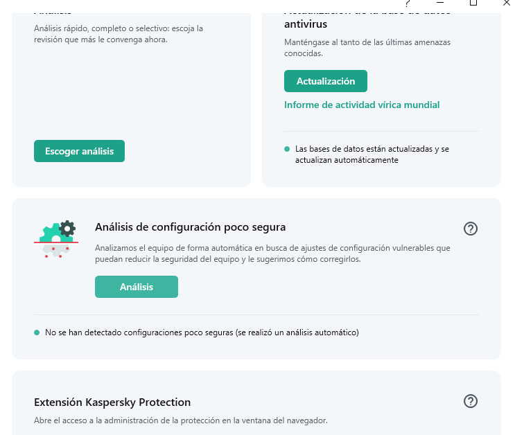
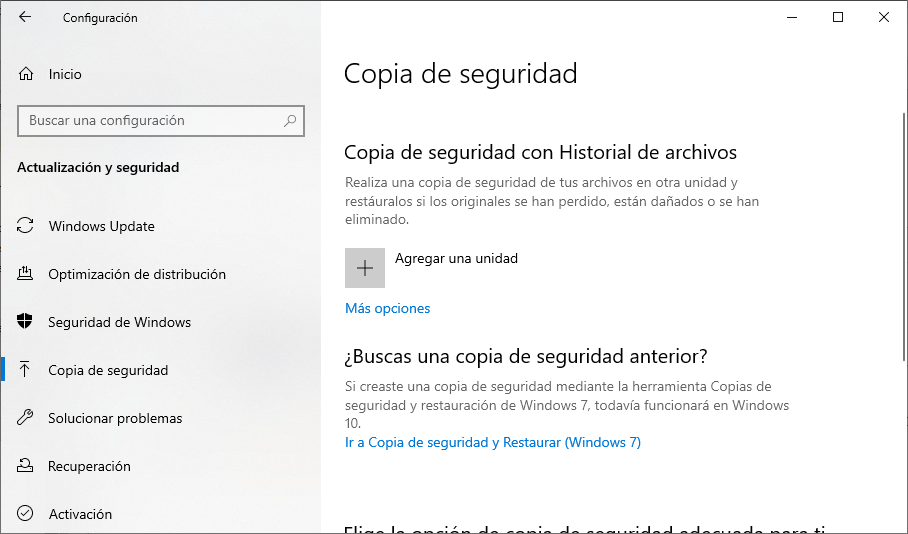

Existen una serie de recomendaciones que pueden ayudarnos a estar más protegidos en nuestra vida digital.
- Actualizar el antivirus
- Desconfiar de los correos, aparentemente provenientes de entidades bancarias, que nos solicitan datos de acceso a nuestras cuentas (pin, contraseña,...)
- Utilizar contraseñas robustas: hay que usar siempre contraseñas que combinen números, letras y símbolos, cuanto más largas más fuertes (mínimo longitud 8). Además, es fundamental, tener una contraseña diferente para cada servicio. Ya que es complicado y tedioso recordar todas, podemos usar un gestor de contraseñas para que nos facilite la tarea. También es recomendable cambiarlas con regularidad.
- Activar la verificación en dos pasos. Añade una capa de seguridad al tener doble factor de autentificación.
- Realizar copias de seguridad con regularidad.
- Usar la huella para autentificarte en el móvil.
- Revisa tus perfiles o cuentas, configura permisos y los apartados de privacidad y seguridad. La suplantación de tu identidad en Internet es un delito y por tanto, puedes denunciarlo a las autoridades competentes.
- No utilices redes wifi públicas, no son seguras. Usa una VPN si tienes que conectarte, esta ocultará tu ubicación y cifrará la información para que nadie pueda acceder a tus datos.
- Navega por páginas web cuyas direcciones empiecen por "https".
- Actualiza el software tanto en tu ordenador como en tu Smartphone. Estas actualizaciones suelen incluir ajustes de seguridad.
- Lee detenidamente los permisos y las políticas de privacidad de los servicios que uses, antes de aceptar.
- Ser discretos online y en público: asegúrate de que lo que compartes en Internet, por ejemplo, en tus redes sociales, no contenga información personal o sensible.
- Sospechar de correos, SMS o mensajes inesperados que te presionan para que realices alguna acción (hacer clic, descargar algo o proporcionar información confidencial.)
- Usar la utilidad carpeta Security, disponible en algunos modelos de móviles, para guardar y proteger información sensible. La aplicación Files de Google también nos proporciona esta utilidad de carpeta segura. Se trata de una carpeta que solo puede ser abierta introduciendo un método de bloqueo (PIN o patrón). A esta carpeta trasladamos los archivos que queremos ocultar.
- No instalar programas de dudosa procedencia.
- Pasar el antivirus a todos los archivos que descarguemos de Internet.
- No exponer información personal o confidencial en las redes privadas.
Realizar una copia de seguridad
Ante la posibilidad de que nuestro PC falle ya sea porque se estropee el disco duro, el sistema operativo falle o algún virus nos realice algún destrozo, debemos contemplar la idea de realizar copias de seguridad de nuestros cada cierto tiempo, con el fin de poder recuperarlos en los casos mencionados. Lo ideal es hacer copias de seguridad, también llamadas backups o copias de respaldo) periódicas de los archivos más importantes, ya que almacenar completamente toda la enorme cantidad de información que posees en el ordenador supone demasiados recursos de espacio, y también de tiempo.
También es recomendable hacer las copias de seguridad en una unidad externa, ya que si el ordenador se "estropea del todo" será complicado recuperar los datos.
Resumiendo, a la hora de hacer una copia de seguridad tenemos que decidir lo siguiente:
- Unidad de respaldo, por ejemplo, un disco duro externo.
- Decidir qué datos importantes queremos salvaguardar.
- Con qué periodicidad hacer las copias de seguridad.
La herramienta que trae Windows para hacer copias de seguridad es muy sencilla. Para acceder a ella pulsamos: Inicio-Configuración-Actualización y Seguridad y en el panel de la izquierda, Copia de seguridad.

Luego pulsamos en Agregar una unidad para seleccionar la unidad que contendrá la copia de seguridad. En la parte de la izquierda nos aparece una lista de las unidades disponibles, donde tendremos que seleccionar una. Ahora nos aparece una opción llamada Realizar copias de seguridad automática de mis archivos, que podemos activar o no dependiendo de si queremos automatizar o no la tarea.
Si pinchamos en Más opciones, tendremos la posibilidad de elegir de qué archivos o carpetas se van a hacer copia, decidir la periodicidad de las copias de seguridad y cuánto tiempo queremos mantener esa copias. Al pulsar en Hacer ahora una copia de seguridad, comenzará el proceso de salvaguarda.
Por último, añadir que también podemos salvaguardar archivos y carpetas en la nube, pero tenemos que tener en cuenta que no pueden ser copias de seguridad completas debido a la limitación de espacio.